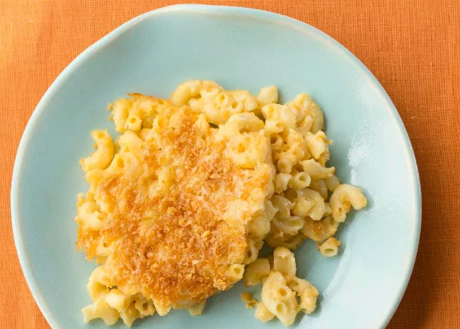

This mac and cheese recipe with a buttered bread crumb topping is creamy and comforting. It's easy to make the cheese sauce from scratch on your stovetop, starting with a roux and adding milk, Cheddar, and Parmesan, resulting in a rich, decadent sauce that coats every nook and cranny of the noodles.
Skip the boxed stuff and make homemade mac and cheese tonight. This from-scratch macaroni and cheese recipe will become a staple in your dinner rotation.
These are the ingredients you'll need to make the best homemade mac and cheese of your life:
You'll find the full, step-by-step recipe below — but here's a brief overview of what you can expect when you make this crowd-pleasing homemade mac and cheese:
This homemade mac and cheese recipe uses a classic mixture of sharp Cheddar and Parmesan. Cheddar is a fantastic base, while Parmesan adds a more complex and salty flavor. Of course, you can adapt this recipe to suit your taste: Gruyere, Monterey Jack, and Gouda are all great options for macaroni and cheese.
At 350 degrees F, this macaroni and cheese should be perfectly golden brown and gooey after about 30 minutes.
Step 1
Preheat the oven to 350 degrees F (175 degrees C). Grease an 8-inch square baking dish.
Step 2
Make the macaroni and cheese: Bring a large pot of lightly salted water to a boil. Add macaroni and simmer, stirring occasionally, until tender yet firm to the bite, about 8 minutes; it will finish cooking in the oven. Drain and transfer to the prepared baking dish.
Step 3
While the macaroni is cooking, melt 1/4 cup butter in a medium skillet over low heat. Whisk in flour and stir until the mixture becomes paste-like and light golden brown, 3 to 5 minutes.
Step 4
Gradually whisk 2 1/2 cups milk into the flour mixture, and bring to a simmer. Stir in shredded Cheddar and finely grated Parmesan cheeses; season with salt and pepper. Cook and stir over low heat until cheese is melted and sauce has thickened, 3 to 5 minutes, adding up to 1/2 cup more milk if needed. Pour cheese sauce over macaroni and stir until well combined.
Step 5
Make the bread crumb topping: Melt 2 tablespoons butter in a skillet over medium heat. Add bread crumbs; cook and stir until well coated and browned. Spread bread crumbs over macaroni and cheese, then sprinkle with paprika.
Step 6
Bake in the preheated oven until topping is golden brown and macaroni and cheese is bubbling, about 30 minutes.